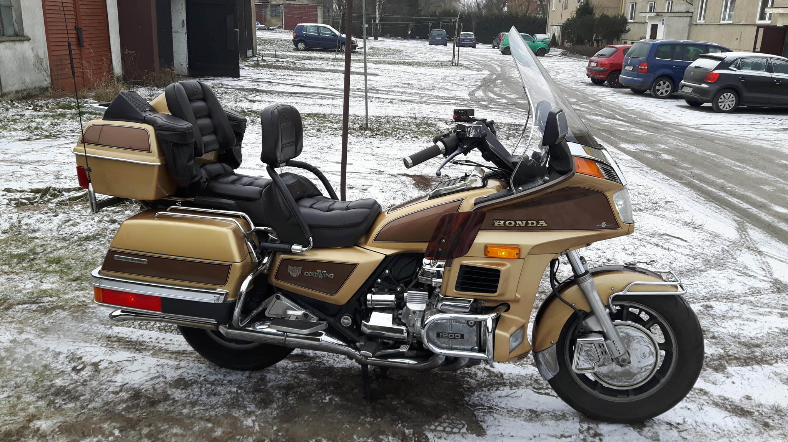

- Moc: 83 KM
- Pojemność: 1085 cm3
- Prędkość maksymalna: 215 km/h
- Przyspieszenie: 0 - 100 kmh 5,5 s
- Waga z płynami: 290 kg
- Spalanie: 7 l / 100 km
- Maksymalny moment obrotowy: 88 Nm
- Obroty dla maks. mom. obr.: 5500 obr / min
W 1979 r. odbyła się premiera Gold Winga z rozwierconym silnikiem, zwiększonym momentem obrotowym (o 10 Nm), wydłużonym rozstawem osi, wyższą kierownicą i pojemniejszym zbiornikiem paliwa (20 zamiast 19 l). Nowy GL 1100, wciąż z czterocylindrowym „bokserem” (83 KM przy 7500 obr/min, 90 Nm przy 5500 obr/min), zyskał wygląd turystycznego krążownika i nie pozostawiał żadnych wątpliwości co do swoich walorów użytkowych.Z technicznych modyfikacji trzeba wymienić bezstykowy układ zapłonowy, pompki przyspieszające w gaźnikach, wzmocniony wałek zdawczy skrzyni biegów i solidniejsze rury nośne widelca teleskopowego. Przednie i tylne amortyzatory w GL 1100 zyskały pneumatyczną regulację. W rezultacie tych zmian powstał jednoślad, którego podwozie nadal nie było zbyt sztywne, ale dużo lepsze niż w GL 1000.Centralna podstawka i układ wydechowy ograniczały możliwość pochyleń, więc ostrzejsza jazda nie wchodziła w rachubę. Za spokojną eksploatacją przemawiała także charakterystyka silnika. Pracował on bez wibracji, a na dodatek był bardzo elastyczny i oszczędny (średnio 6,5 l/100 km).